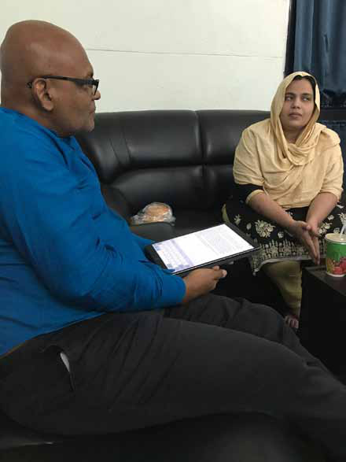

"Sri Lanka should have a Sedition Act or Maintenance of Religious and Ethnic Harmony Act to prevent people from insulting people of different ethnic and religious groups."
"Sri Lanka should have a Sedition Act or Maintenance of Religious and Ethnic Harmony Act to prevent people from insulting people of different ethnic and religious groups."
Jaffna Monitor hellojaffnamonitor@gmail.com 27 sins, they embraced the Islamic State ideology. The Indian and the Sri Lankan investigators are professionals. Their findings based on the evidence should be respected. Nusrath was involved in selling imported telecommunication devices, phone accessories, and electrical equipment from Singapore, Malaysia, and Dubai and had a criminal history. In September 2020, Nusrath was arrested in Colombo for possession of heroin. Nafran was importing garments, shoes, and chocolates from India and Dubai. The son of a notorious criminal, Mohamed Niyas Naufer, alias' Potta Naufer,' Nafran was arrested by the Sri Lanka Police under the National Gem and Jewellery Authority Act in 2017. Although Nusrath and Nafran had traveled overseas over 100 times, including to India, Faris, a porter, and Rashdeen, a trishaw driver, were on their first visit to India. Nusrath had a valid visa for Pakistan. According to ATS, Gujarat, the Sri Lankans were "active members of the proscribed terrorist organization Islamic State (IS)" and are "highly radicalised." ATS investigation revealed that "they have conspired to carry out a terrorist attack at some place in India under the banner of the Islamic State (IS)." They arrived from Colombo to Ahmedabad via Chennai. Police officers were deployed to arrest them at Ahmedabad Airport. The would-be-perpetrators-possessed: 1. A video on Nusrath's mobile phone shows the four men standing in front of a black flag with an Arabic inscription. They pledged allegiance in Arabic and Tamil to the Islamic State, vowing to follow the path shown by Abu Bakr Baghdadi, the former leader of IS, to punish those who commit atrocities against the Muslim community and to target Jews, Christians, and members of the BJP-RSS. "Sri Lanka should have a Sedition Act or Maintenance of Religious and Ethnic Harmony Act to prevent people from insulting people of different ethnic and religious groups." Prof Rohan Gunaratna visiting the Verdala Palace in Malta

Jaffna Monitor hellojaffnamonitor@gmail.com 28 2. Five photographs and one video were found on the Proton drive used by the would-be perpetrators. The photographs included (a) a water canal with a probable landmark, (b) a parcel in a pink bag under the cavity of a concrete boulder, (c) a parcel wrapped in a pink bag and packed with brown adhesive tape, (d) a flag with Arabic writing in the middle and three pistol-shaped parcels arranged side by side, and (e) three pistols and three magazines loaded with ammunition. The black flag had the inscription 'Mohammed is the Messenger of God, and there is no God but Allah' written in white and black Arabic letters, found during the discovery of these hidden articles. 3. A self-sent email was also found in Proton Mail, containing the grid reference with the latitude and longitude of a location. Investigators revealed that their handler, a leader of the Islamic State named Abu Pakistani, had informed them he would share photos of the weapons and the grid reference location, as well as photos of the place where the weapons would be hidden, through Proton Drive and Proton Mail. He instructed them to go to that location, retrieve the weapons, and await further instructions. At the coordinates disclosed in the Proton Mail, the ATS immediately conducted a search in the presence of the suspects, where they found three pistols and one black flag in a parcel. All three pistols had star markings. Two pistols had seven rounds each in their attached magazines, while the third had six rounds, totaling 20. The rounds were marked 'FATA,' and the serial numbers on the pistols had been deliberately scratched off to prevent tracking. Investigators identified the pistols as likely being Norinco Type 54 models, with the ammunition manufactured in the former Federally Administered Tribal Areas (FATA) of Pakistan. After Abu Pakistani's indoctrination, they took the oath to the Islamic State, became members, and received Sri Lankan Rs. 400,000/- in currency and
Jaffna Monitor hellojaffnamonitor@gmail.com 29 communicated to their handler to receive weapons and ammunition upon landing in Gujarat for the terrorist attacks. Given the recent arrests in India, do you think the Sri Lankan government is doing enough to monitor and prevent cross-border terrorist activities? When it comes to the threat posed by the Islamic State, the threat to the subcontinent is common. The Islamic State threat in India, Bangladesh, Sri Lanka, Pakistan, or Maldives can affect any country in the region. To address this common threat swiftly and efficiently, there should be an excellent relationship between Sri Lanka and India at a working level. The Sri Lankan Government failed to act on the threat intelligence on Easter attackers provided by the Tamil Nadu Intelligence through RAW and IB. Had the Government of Sri Lanka enjoyed a relationship with Tamil Nadu Police before the Easter attack in 2019, the Easter Sunday massacre could have been preempted. The Sri Lankan Government has historically maintained liaison with RAW (Research and Analysis Wing) and IB (Intelligence Bureau). Given the rise of the Muslim threat in the subcontinent, especially in Pakistan and India, without further delay, Sri Lanka should build close relationships with the neighboring police intelligence and police counter-terrorism services. Sri Lanka should advocate creating a network with the Indian state police intelligence, such as the Q Branch in Tamil Nadu, Counter- terrorism units within their state police, such as the Anti-Terrorism Squad of Gujarat, and other entities, such as the National Investigation Agency dealing with the Islamic State and other threats. It is too late to build relations after an incident. To monitor, prevent, preempt, and respond to cross-border terrorism, the Sri Lankan government should establish a dedicated multi-agency counter-terrorism center staffed by experts and specialists from the police, military, intelligence, central bank, and other relevant agencies. It is not too late to address emerging regional and global threats. What role do you see international cooperation playing in preventing the spread of radical ideologies and terrorist activities in Sri Lanka and the broader region? Governments working in cooperation, collaboration, and partnership are key to defeating the Islamic State, both a transnational movement and a pervasive ideology. To address the immediate threat, there should be a special relationship between India and Sri Lanka to jointly investigate terrorism. The intelligence relationship between the national agencies is excellent, but there should be a relationship built between the investigative authorities. Historically, terrorists used Tamil Nadu to attack Sri Lanka, and today, it is the other way around. After Prabhakaran assassinated Alfred Duraiapph on July 27, 1975, he moved to Tamil Nadu and engaged the Indian Tamil separatists from Dravidar Kazhagam and, after the riots of 1983, infiltrated the two mainstream Tamil Nadu parties. After India turned against the LTTE, the Rajiv Gandhi murder was planned in Sri Lanka by Prabhakaran, Pottu Amman, and Sivarasan. The assassin Kalaivani Rajaratnam alias

Jaffna Monitor hellojaffnamonitor@gmail.com 30 Thenmozhi alias Dhanu was recruited in India, trained in Dindugal, Tamil Nadu, in the dedicated women's batch, and fought against the IPKF. The team that assassinated Rajiv Gandhi travelled from Sri Lanka to India. Of the dozen attempts by LTTE remnants to mount attacks in Sri Lanka since the war ended in 2009, nearly half had links to Tamil Nadu. Similarly, Salafi Wahhabi groups in Tamil Nadu, particularly the Tamil Nadu Tawhid Jamaat, influenced Zahran to create the National Tawhid Jamaat. Zahran's model was its leader, P. Jainulabideen, and he began to emulate his mentor. Intelligence cooperation preempted the return of PJ, a Salafi Wahhabi cleric in Tamil Nadu, to Sri Lanka. Additionally, Zahran's relative, deputy and ideologue Noufer maintained the largest Islamic State website in the Tamil language. The revival of the Islamic State in Tamil Nadu and Kerala should prompt the Sri Lankan police department to work directly with Indian state police departments. Therefore, intelligence services, law enforcement authorities, and military forces in Sri Lanka and India should move from counter-terrorism cooperation to collaboration and partnership. This should have occurred before or immediately after the Easter Sunday attack. It did not, and a multi-agency/multi-stakeholder approach is essential to prevent, preempt, and respond to incidents. Like ASEAN governments built ASEAN OUR EYES to share and exchange intelligence, the countries of the Indian Ocean Region (IOR) should work together. IOR comprises of the Indian Ocean and the countries bordering it-- Australia, India, Indonesia, Bangladesh, Madagascar, Somalia, Tanzania, South Africa, the United Arab Emirates, and Yemen. The home to around 2.5 billion people (one-third of the global population), it is the third largest ocean in the world, covering around 20% of the Earth's water surface. With the rise of the Islamic State Khorasan Province (ISKP), governments should wake up to the challenge. Today, ISKP operates not only in Central and South Asia. In recent times, ISKP has mounted attacks in Turkey and Moscow and attempted to conduct attacks Professor Rohan Gunaratna in conversation with Hadiya, widow of Zahran, leader of the Islamic State, Sri Lanka Branch

Jaffna Monitor hellojaffnamonitor@gmail.com 31 Prof. Rohan Gunaratna at the launch of the Handbook of Terrorism in the Asia-Pacific. in Europe and the US. ISKP is supplanting the Islamic State core that reached its territorial and ideological peak in Iraq and Syria in 2014-2018. The IOR leadership should build a counter-terrorism network and an alliance to detect, disrupt, and dismantle threat networks that harm the region and beyond. The future of securing the IOR lies in intelligence, law enforcement, and the military working together. They need to shift from mere networking and cooperation to collaboration and partnership. To secure the IOR, they should invest in six streams of activity: 1) exchange of personnel, 2) common databases, 3) joint training, 4) joint operations, 5) sharing of resources and technology, and 6) sharing of experience and expertise. What lessons can be drawn from the Easter Sunday attack and the recent arrests to prevent future terrorist activities in Sri Lanka? I have outlined the lessons to be drawn from the Easter Sunday attack in my book, "Sri Lanka's Easter Sunday Massacre - Lessons for the International Comm unity." Since then, the Easter Sunday attack has become a "political football" by power- hungry politicians. They are exploiting it without addressing the threat. Today, the challenge is for the government and political opposition to develop a bipartisan approach to address all threats comprehensively. In the ranking of preeminent security threats to Sri Lanka, the Government has rightly identified the following priority threats: Religious extremism and terrorism Separatism and terrorism Organised crime, especially illicit drugs Geopolitics Cyber threats As some of these domains are linked, the approach and strategy of the State should be to produce professionals
Jaffna Monitor hellojaffnamonitor@gmail.com 32 who are both specialists with deep expertise and generalists with a 360-degree helicopter view. Significant developments have been made in building a robust security and intelligence community, including infrastructure to train the next generation of leaders. With the transition from a unipolar to a multipolar world, a dedicated national security service should be established with expertise to protect the nation's economic and financial security, environmental and climate security, cyber and information security, and guard against foreign political interference. As most of the threats originate from overseas, the Government should establish an external intelligence service to develop expertise in global and regional security threats, as well as geopolitics, geoeconomics, and geostrategy. Since national and international security is a spectrum, the foreign service, armed forces, and police should modernise by recruiting the best and brightest. They should be fluent in all three national languages and proficient in IT. Given their competence, the number of Tamil and Muslim officers in the ranks should be increased. The Government should establish a degree- awarding institution similar to the Fletcher School of Law and Diplomacy, the Edmund A. Walsh School of Foreign Service, and the Elliott School of International Affairs to professionalise the Sri Lankan foreign service. The police should create a dedicated division for national security investigations. The existing legal and policy framework to investigate and prosecute those who engage in online falsehoods and manipulations should be operationalised. There is a precedent to the recent arrest of four Sri Lankans in Gujarat. It is not the first time that Sri Lankans and those of Sri Lankan heritage have been noted for their activities and actions. In New Zealand, Ahamed Aathill Mohamed Samsudeen from Kathankudi shouted 'Allahu akbar,' stabbing six people in the New Lynn supermarket in September 2021. In London, Sudesh Amman, another Islamic State member of Sri Lankan heritage, wore a fake suicide belt and randomly stabbed the public, injuring two in south London in February 2020. In UAE, 33 Sri Lankan men and women linked to the suicide bomber Fathima Jiffry promoting a "deviant ideology" and raising funds were arrested, debriefed, and deported to Sri Lanka in 2019. In Chennai, another Sri Lankan, Mohammed Zakir Husain, was arrested for surveilling the US Consulate in Chennai and the Israeli Consulate in Bengaluru in April 2014. In May 2014, Malaysia arrested his Sri Lankan associate Mohamed Hussain Mohamed Sulaiman, tasked to ferry two suicide terrorists from Maldives to strike the two diplomatic targets. Sri Lankans should understand that there is ongoing radicalisation of all communities in the country, and it has spread beyond Sri Lankan shores. This requires both the State and the communities to reform their educational, religious, and informational spaces and institutions. Furthermore, there is a geopolitical dimension where foreign governments are recruiting Sri Lankans to advance their interests. In addition to addressing radicalisation, the Government should develop a legal and policy framework to deter, prevent, and counter a range of national security threats, from foreign interference to espionage.